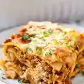

Lasgna Page

Description:
Ingredients:
- Noodles
- Meat Sauce
- Cheese Mixture
- Toppings
Steps:
- Make the Meat Sauce: Heat a large skillet over medium heat. Brown the ground beef, Italian sausage, diced onion, and minced garlic until the meat is no longer pink. Stir in the pasta sauce and tomato paste, then let it simmer for 15 to 25 minutes.
- Boil the Noodles: Cook the lasagna noodles in a large pot of boiling salted water until al dente, then drain and rinse with cold water.
- Mix the Cheese: In a bowl, combine the ricotta (or cottage cheese), egg, and fresh parsley with a pinch of salt and pepper.
- Layer the Lasagna: In a 9x13-inch baking pan, spread a thin layer of meat sauce on the bottom. Add a layer of lasagna noodles, a spread of the cheese mixture, some meat sauce, and a handful of mozzarella. Repeat these layers until you run out of ingredients, finishing with a top layer of sauce and a generous blanket of mozzarella and Parmesan.
- Bake: Cover the dish with foil and bake at 350°F (175°C) for 45 minutes. Remove the foil and bake for another 15 minutes until the cheese is golden and bubbling.
- Rest and Serve: Let the lasagna rest for about 15 minutes before slicing and serving so the layers hold their shape
Odin Recipes